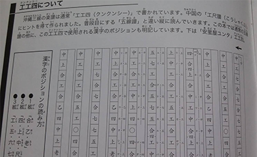
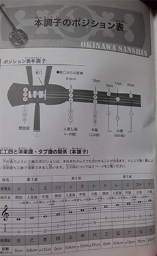
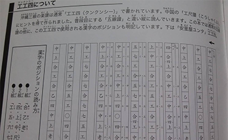
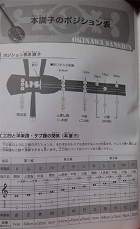

竜弘会について
竜弘会は、昭和63年に発足し、 民謡、唄、和楽器の継承に努めています。
現在は、民謡や唄、三味線、三線、大正琴の教室を横須賀市内で開催しております。また、ボランティアや浦賀、久里浜のコミュニティセンターの文化祭、はまゆう会館、横須賀市文化会館等々に出演させていただいております。
さらに、横須賀国際交流協会に所属しており、ベースのサリヴァンスクールにて日本伝統芸能として大正琴の体験会を行っています。
楽器について
三味線は４００年以上前 中国から沖縄にわたり、本土でこのような形になり今がある。 太鼓の部分は猫皮と犬皮 (けんぴ)がありほぼ犬皮を使用していますが人工皮もあります。棹は初心者は花林(かりん) 上手になると、とちの細かい紅木(こうき) をよく使われます。棹は長唄用細棹、中棹、津軽三味線用がある。
三線はは沖縄の伝統芸能で太鼓の部分はニシキヘビの皮がよく使われますが、人工皮もあります。
 



興味のある方へ
現在は民謡、唄、三味線、三線、大正琴の教室を横須賀市内で開催しています。
それぞれは基本月2回で教室によって会費が異なります。
民謡 2000円
三味線 6000円
民謡唄 2000円
大正琴 2500円
三線 3000円
となります。
興味のある方はどうぞ講演会等に足を運んでいただけると嬉しいです。
お問い合わせ先：
分からないことがあれば気軽にお問い合わせください。
お知らせ
第５５回横須賀民謡協会
記念大会開催
2020年4月26日(日)
10時~16時
はまゆう会館